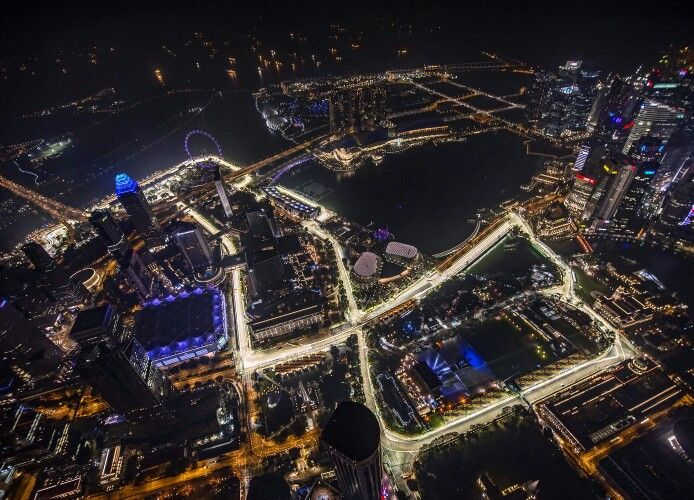

Marina Bay Street Circuit

Technical Details
Location: Singapore
Length: 5.083 km
Laps: 61
First GP: 2008
Curiosities
Marina Bay Street Circuit is a permanent racing circuit located in Singapore. It is known for its unique layout that runs through the heart of the city, featuring a long straight and several challenging corners. The circuit has hosted the Singapore Grand Prix since 2013, becoming a favorite among drivers and fans alike.